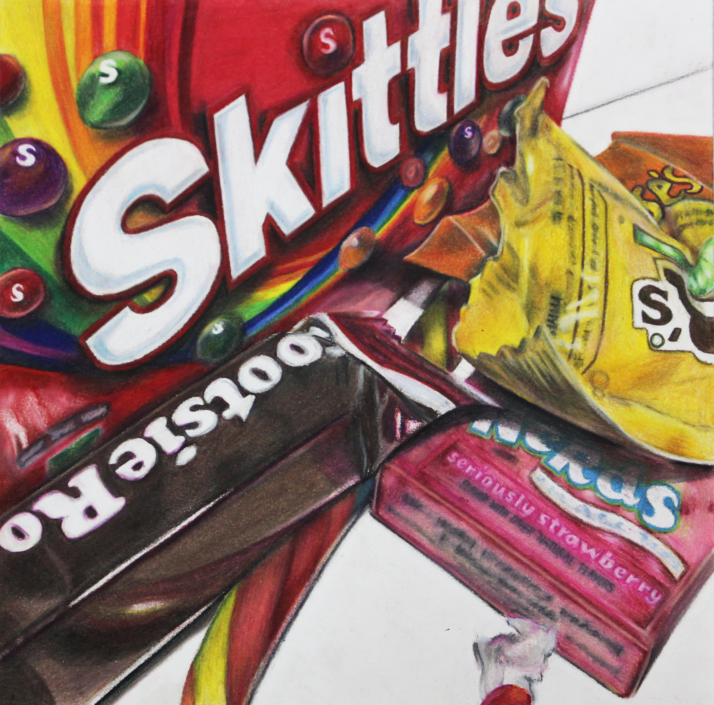
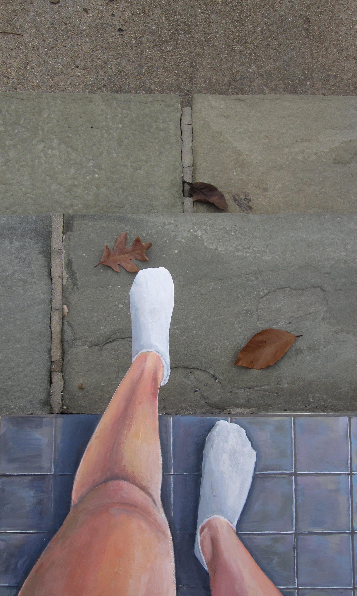
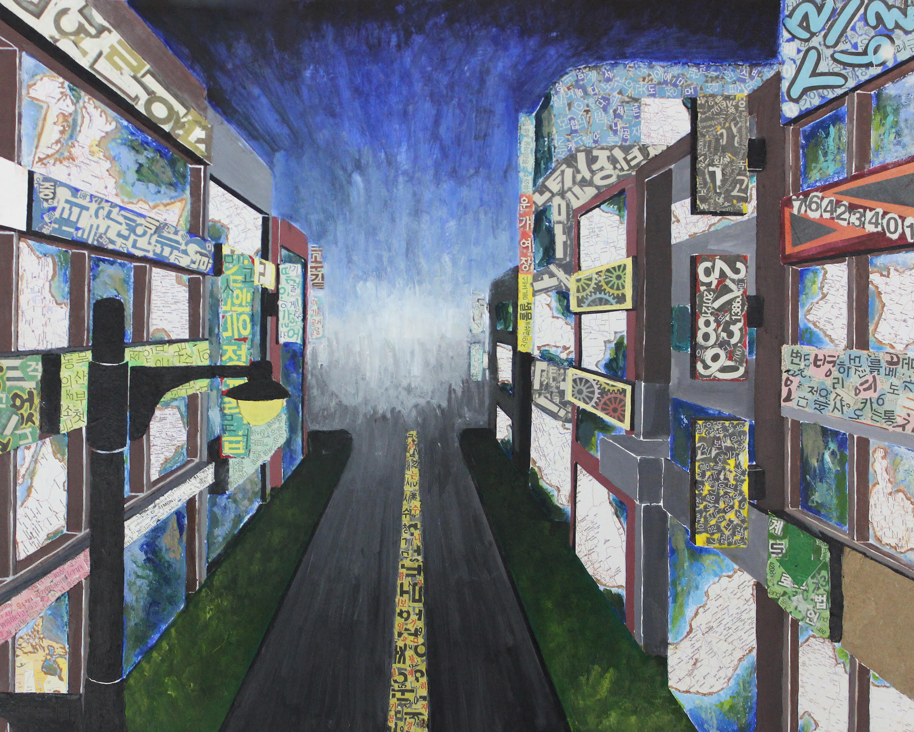

Struggle for Identity
Year 2018-2020

"Muckraker", acrylic paint, cardboard, 2019, 7000px X 1929px
Scholastic Art & Writing Awards - Honorable Mention
Definition of Muckraker: investigative journalists during the Progressive Era
(1890s-1920s) who shone a light on corrupt business and government leaders as well as major social
problems like racism.

"Convergence",
charcoal, watercolor paint, 2018,
18" x 24"
Scholastic Art & Writing Awards - Silver Award
Even within a family, we are different, yet our differences come together to form a unified whole.

"Adrenaline",
Scholastic Art & Writing Awards - Silver Award
"Adrenaline",
colored pencil, 2018, 12" x 12"
Scholastic Art & Writing Awards - Silver Award
Celebrating Art - National Top 25% (published) (Fall 2018)
In the stillness of night, adrenaline rises, turning the darkness into a rush.
Despite the pain or fatigue, the night makes everything feel more alive, and the sweetness of sugar amplifies the thrill.

"Inside",
charcoal, 2019, 18" x 24"
Scholastic Art & Writing Awards - Silver Award Celebrating Art - National Top 25% (published) (Fall 2019)
There’s always a different version of myself locked inside, reflected in a true mirror.
Opening up to others is difficult, but sometimes it’s necessary to avoid staying trapped within.

"Burning Memories",
charcoal, 2020, 3000px x 4000px
Celebrating Art - National Top 25% (published) (Spring 2020)
My work explores the interaction between memory and identity.
Through layered textures and contrasts, I reflect the complexity of how
both the moments we hold onto and the ones we try to forget shape who we are.

"Into the New World",
"Into the New World",
acrylic paint, 2018,
2500px X 4169px
Scholastic Art & Writing Awards - Honorable Mention
Even in the face of change, the struggle for identity drives me forward, and
through each challenge, I build a stronger sense of self.

"Mosaic City",
"Mosaic City",
acrylic paint, newspaper, map, 2018,
16" x 20"
Even with distractions along the way, my goal remains clear, and through the struggle,
I move closer to discovering who I am.